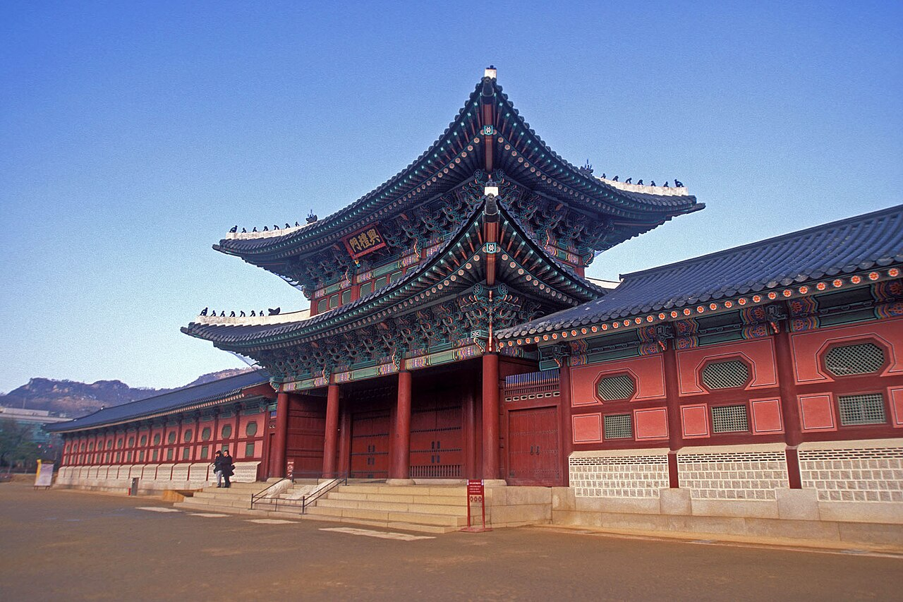
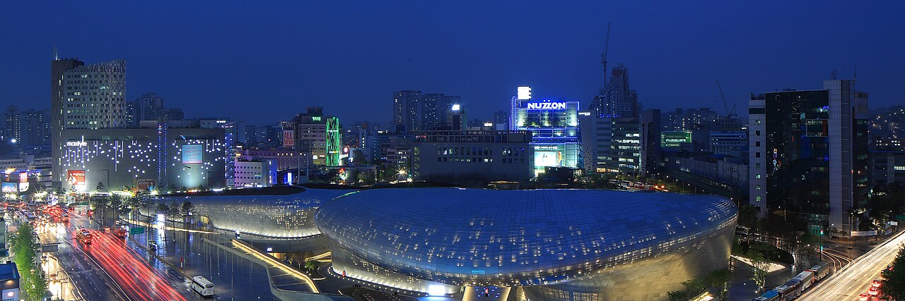
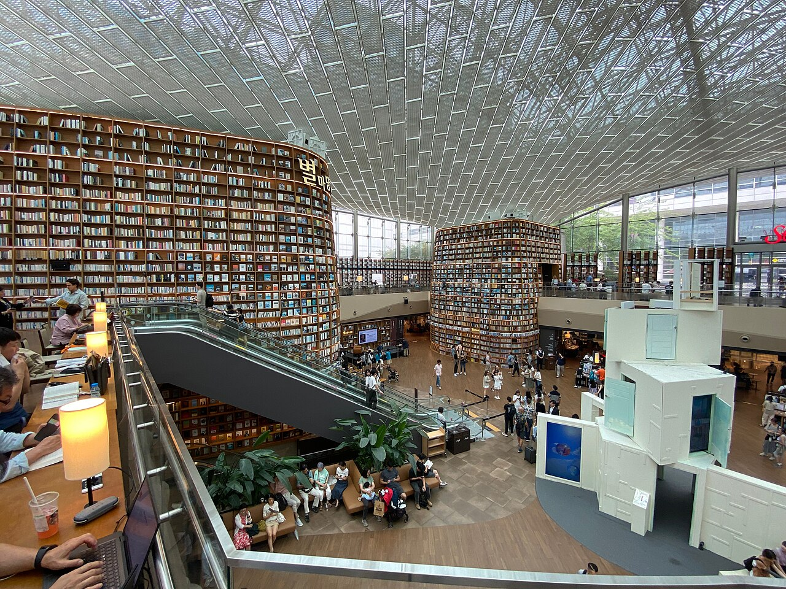

서울에서 만나는 대표 명소

조선 시대의 역사와 전통 건축을 만날 수 있는 궁궐입니다.

전시와 패션, 디자인 문화를 경험할 수 있는 복합 문화 공간입니다.

도심 곳곳에서 독서와 전시를 즐길 수 있는 문화 공간입니다.
서울은 오랜 역사와 빠르게 발전하는 현대 문화가 함께 어우러진 대한민국의 수도입니다.

조선 시대의 역사와 전통 건축을 만날 수 있는 궁궐입니다.

전시와 패션, 디자인 문화를 경험할 수 있는 복합 문화 공간입니다.

도심 곳곳에서 독서와 전시를 즐길 수 있는 문화 공간입니다.
서울에서는 전통 시장의 길거리 음식부터 한식, 카페와 다양한 세계 음식까지 폭넓은 먹거리를 경험할 수 있습니다.
빈대떡, 육회, 마약김밥 등 서울의 대표 시장 음식을 맛볼 수 있습니다.
엽전을 이용한 도시락 카페에서 원하는 반찬을 골라 즐길 수 있습니다.